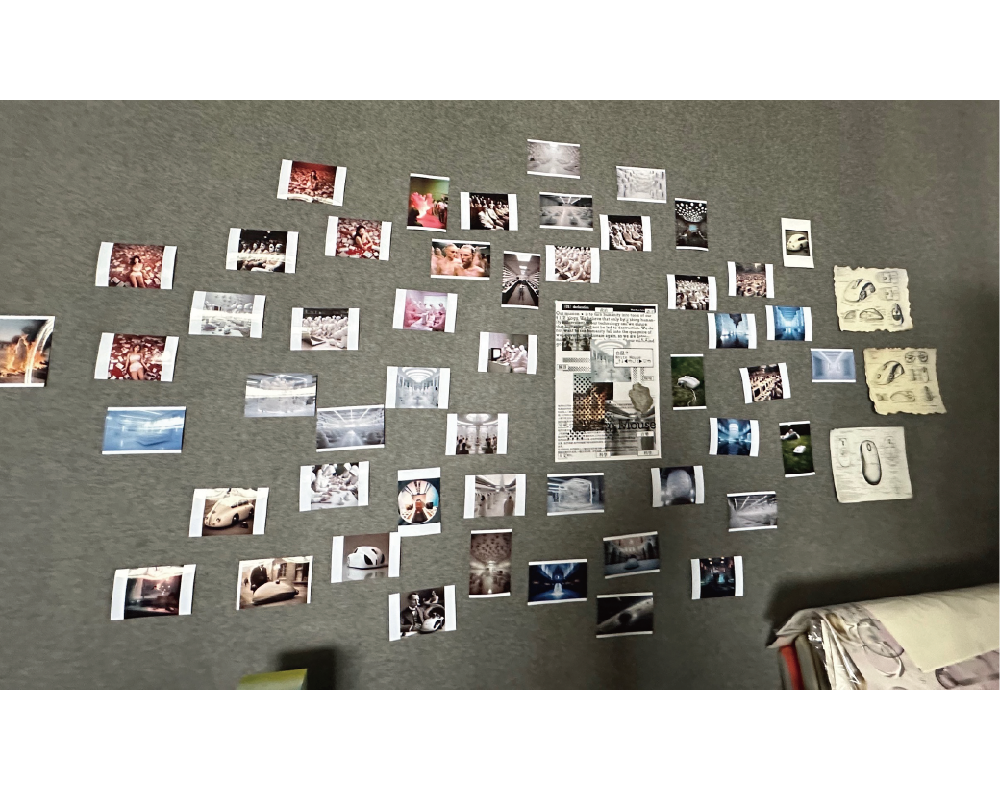
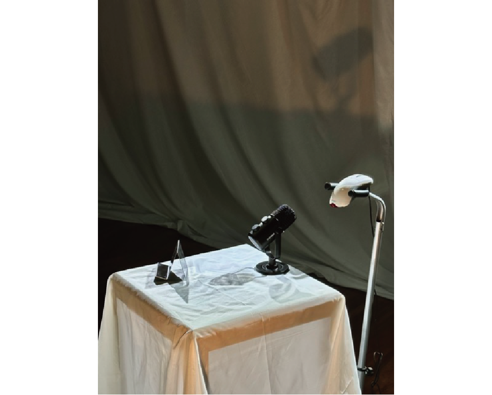
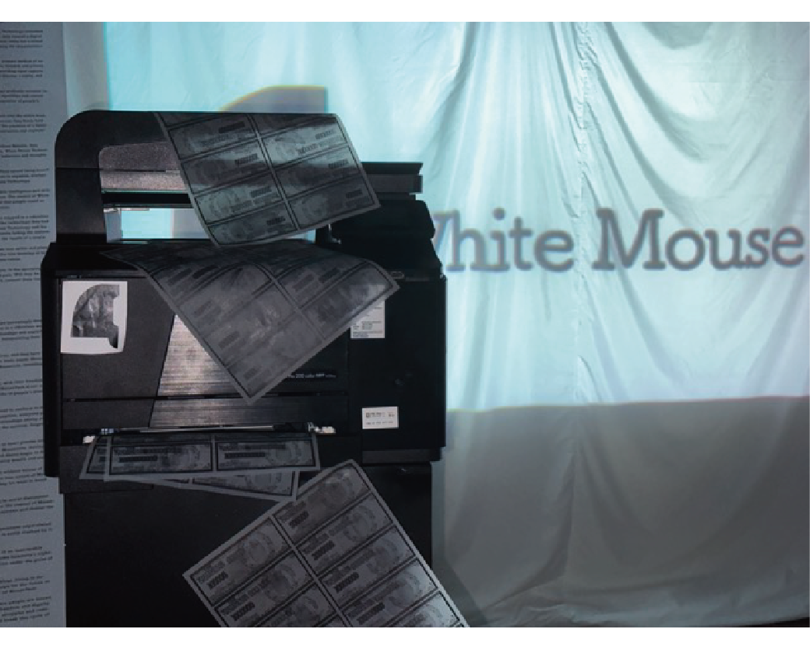
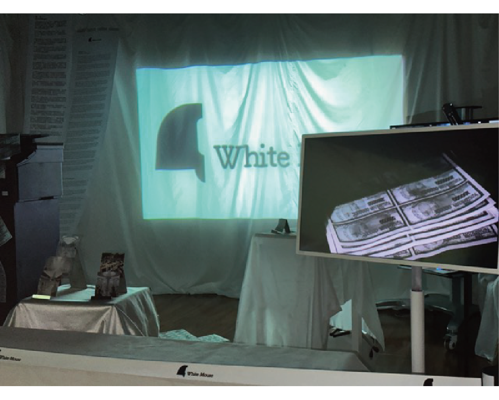

陈龙 Wx/Tel 18121115698
Chen Portfolio (科技 Technology ) (人工智能 AI) (政治 Policy)


在后数宇时代的背景下，一个白色鼠标在人工智能的媒介之下变成了无限可能性的符号，而这个白色鼠标又在公司殖民主义之下的环境中成立了白鼠科技公司，我们以扩张 殖民 统治人类为己任，在白鼠先生的领导下，构建了这样一个乌托邦，那么接下来让我们有请白鼠先生。